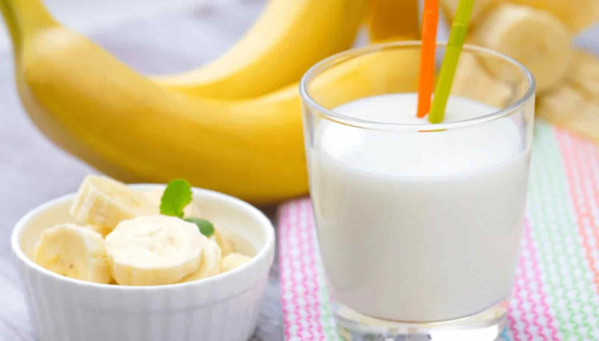
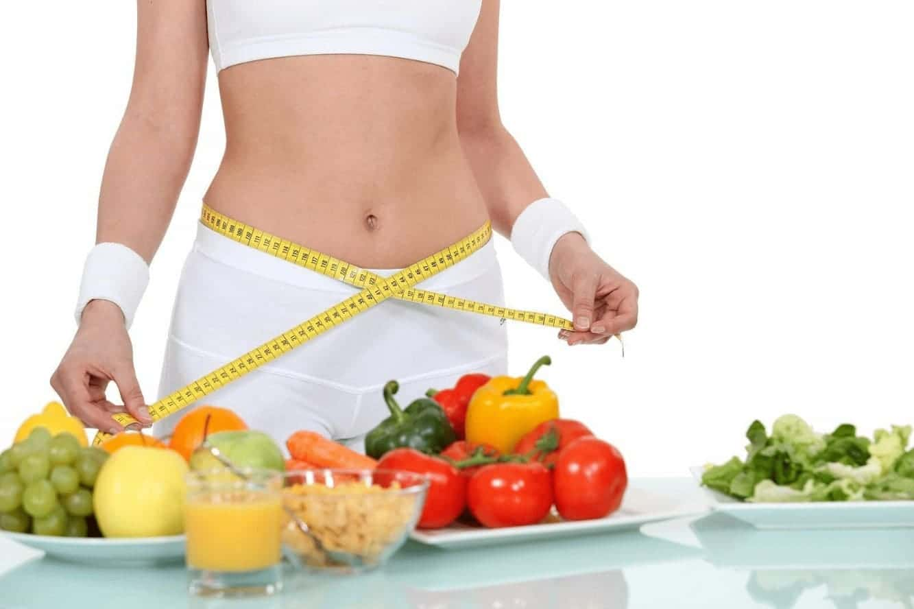

Многие женщины мечтают похудеть и для достижения этой цели существует множество различных методов. Случаются такие ситуации, когда необходимо сбросить вес за очень короткий промежуток времени. Большое количество женщин спрашивает себя: реально ли быстрое похудение или это все выдумки компаний по производству лекарственных средств. Стоит сказать, что такие методы все-таки существуют и некоторые из них рассмотрим в данной статье.
В первую очередь подбирайте такой продукт диеты, который будет доступен (его можно купить в любом магазине), в противном случае придется затратить большое количество времени на его поиски. Этот продукт должен также приходиться по вкусу, если его будет неприятно употреблять в пищу, то пройти курс диеты будет в несколько раз сложнее.
Стоит также отметить, что для диеты необходимо подбирать такое блюдо, на приготовление которого затрачивается минимальное количество времени. Это позволит проводить мало времени на кухне, что существенно снижает риск возникновения желания съесть что-нибудь вкусненькое.
Иногда случаются такие ситуации, когда за очень короткий промежуток времени необходимо сбросить вес. К примеру, вам срочно нужно идти на какой-то праздник или деловую встречу. Такие диеты также пользуются огромной популярностью перед началом пляжного сезона. Стоит сказать, что быстрое похудение может быть достигнуто только с помощью сложных диет.
Во время их прохождения рекомендуется максимально сократить количество пищи и полностью отказаться от ужина. Многие женщины считают, что эффективная диета — это та диета, которая строится на употреблении одного продукта. Большой популярностью также пользуются диеты под названием разгрузочные дни. Они позволяют сбросить до 4 кг за 3 дня.
Первый день считается так называемым входом в диету, второй день вы полностью голодаете, а на третий вы начинаете постепенно выходить из диеты. В первый день вам следует ограничить употребление жирной и богатой на углеводы пищи. Категорически запрещается употреблять в пищу крупы и бобовые. На завтрак разрешается пить зеленый чай, на обед можно есть сырые овощи и фрукты.
Если вы собрались делать салат, ни в коем случае не заправляйте его с помощью майонеза. Вместо него рекомендуется добавлять оливковое масло, ведь оно, кроме позитивного действия на снижение веса, является очень лечебным и оказывает хорошее воздействие на человеческий организм. В первый день такой диеты необходимо полностью отказаться от ужина, вместо него разрешается пить только воду или зеленый чай.
Второй день нужно голодать. Можно пить только воду, не больше 3-4 литров. Третий день называют медленным выходом из диеты. На протяжении этого дня вам следует есть ту же пищу, что и в первый день.
Такой подход к диете существенно снижает риск возникновения различных проблем с организмом, связанных с полным отказом от пищи. Подготовка к голоданию позволяет настроить организм на нужный лад. Плавный выход из голодания также играет огромную роль. Ведь если вы сразу же после голодания резко начнете употреблять обычную для вас пищу, это может кончиться очень плачевно для вашего желудка и кишечника.
Многие женщины считают, что эффективная диета может быть осуществлена за счет употребления в пищу исключительно картошки в мундирах. Смысл такой диеты заключается в том, что вы на протяжении недели выбираете себя дни, в которые вы питаетесь исключительно картофелем в мундирах. Важно заметить, что при его приготовлении категорически запрещается использовать соль или какие-либо специи. Такая диета позволит вам сбросить 3 кг за неделю.
Существует и другая разновидность этой диеты. Вместо картофеля вы употребляете в пищу бананы и три стакана молока.
Наиболее эффективной и быстрой принято считать так называемую безуглеводную диету. За три дня придерживания такой диеты вы можете сбросить 5 кг. Важно понимать, что данный показатель может колеблется в зависимости от метаболизма и массы тела.
Меню такой диеты имеет следующие вид:
Как видите, в наши дни существует достаточно большое количество различных диет для похудения. Поэтому иногда бывает сложно подобрать наиболее подходящую и оптимальную. Стоит сказать, что все диеты, представленные в данной статье, являются эффективными.
Однако качество их действия зависит в первую очередь от того, подходит ли вам конкретная диета. Чтобы найти наиболее оптимальную для вас диету, рекомендуется попробовать разные и определить одну наиболее качественную и надежную. Перед началом диеты в обязательном порядке сходите на консультацию к доктору.